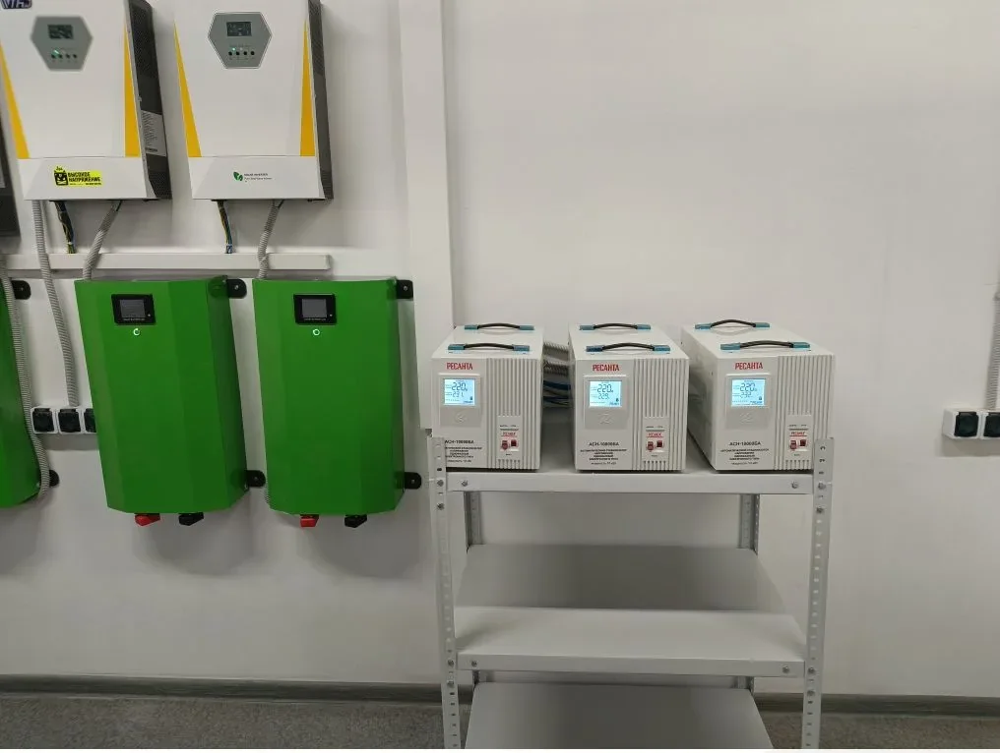

Екатеринбург / Свердловская область
Электромонтаж производственных и коммерческих помещений
Делаем понятный электромонтаж для цехов, складов, сервисов, магазинов и помещений под арендатора: силовые линии, лотки, освещение, щиты и подключение оборудования.
Работы
Для бизнеса важны сроки, безопасность и обслуживание после запуска
Кабельные трассыЛотки, линии питания, маркировка, подготовка к подключению оборудования.
Силовое питаниеЛинии под оборудование, распределение нагрузок, вводы и отходящие группы.
ОсвещениеРабочее, техническое и зональное освещение для производственных и складских помещений.
Щиты и автоматикаВРУ, АВР, ЩУ и распределительные щиты под фактическую задачу объекта.
Квалификация
Щитовая сборка показывает уровень работы с промышленной электрикой
Для производственных объектов важно не просто протянуть кабель, а собрать систему, где понятны ввод, защита, управление, резерв и обслуживание.


Для расчета
Что нужно для оценки производственного объекта
- Тип помещенияЦех, склад, сервис, торговое помещение, офис или помещение под арендатора.
- Мощности и оборудованиеПеречень потребителей, станков, вентиляции, освещения и инженерных систем.
- Проект или фотоПлан, однолинейная схема, фото вводного щита, трасс и мест подключения.
- Сроки и доступКогда можно работать, есть ли действующее производство, ограничения по шуму и графику.
Для заявки
Какие объекты бизнеса рассматриваем
Эта страница должна ловить не только общий промышленный запрос, но и более близкие к заявке ситуации: открытие помещения, переезд арендатора, подключение оборудования, подготовка склада или сервиса.
Помещение под арендатораБыстро понять, какие линии, щит, освещение и розетки нужны под фактическую планировку.
Склад или сервисОсвещение, рабочие зоны, розеточные группы, силовые линии и подключение оборудования.
Производственный участокКабельные трассы, силовое питание, защита линий, распределительные щиты и понятная маркировка.
Торговое помещениеПодготовка электрики под открытие: освещение, кассовая зона, оборудование, щит и отдельные линии.
Нужно запустить электрику на объекте?
Опишите помещение и оборудование. Подскажем, какие данные нужны для расчета.